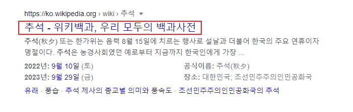
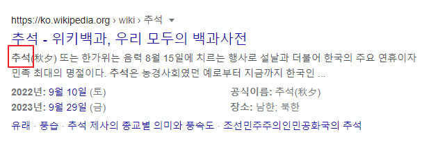

meta
<meta>
- 해당 문서에 대한 정보인 메타데이터를 정의할 때 사용한다.
- <base>, <link>, <script>, <style>, <title> 요소와 같은 다양한 종류의 메타데이터를 제공할 때 사용되며, 브라우저나 검색 엔진, 다른 웹 서비스에서 사용하게 된다.
- 반드시 head 안에 있어야 한다.
- name 속성이나 http-equiv 속성이 명시되었다면, 반드시 content 속성도 함께 명시되어야 한다.
- html5에서는 viewport를 사용하여 모든 기기에서 사이트가 잘 보이도록 설정한다.
종류
-
웹 브라우저 한글깨짐 현상을 막아주는 인코딩 선언
<meta charset="UTF-8">- EUC-KR / ISO-2022-KR : 한국어 문자 인코딩
- EUC-JP / ISO-2022-JP : 일본어 문자 인코딩
- GB2312 : 중국어 문자 인코딩
- ISO-8859-1 : 북미, 서부 유럽, 라틴 아메리카, 카리브해, 캐나다, 아프리카
- ISO-8859-2 : 동유럽
- ISO-8859-3 : 남동유럽, 에스페란토
- ISO-8859-4 : 스칸디나비아, 발트 연안국
- ISO-8859-5 : 불가리아어, 벨로루시어, 러시아어, 마케도니아
- ISO-8859-6 : 아랍문자
- ISO-8859-7 : 현대 그리스문자 언어뿐 만 아니라 수학 기호
- ISO-8859-8 : 히브리어 문자를 사용하는 언어
- ISO-8859-9 : 터키어
- ISO-8859-10 : 에스키모, 북유럽 언어
- UTF-8, UTF-16, UTF-32 : 모든 언어의 문자를 지원하는 인코딩
- 검색 엔진에 의해 검색되는 단어 지정

<meta name="keyword" content="추석 - 위키백과"> - 검색 결과에 표시되는 문자를 지정

<meta name="description" content="추석"> - robots (검색 로봇 제어)
<meta name="robots" content="noindex, nofollow">- noindex : 검색 결과에 이 페이지를 표시 하지 않는다.
- nofollow : 이 페이지의 링크를 따라가지 않는다.
- noarchive : 검색결과에 저장된 페이지 링크를 표시하지 않는다.
- All(기본값) : 색인 생성이나 게재에 대한 제한이 없다, 기본값이므로 명시적으로 표시해도 효과 없음
- Non : noindex, nofollow와 같다
- index : 그 페이지를 수집대상으로 한다.
- Follow : 그 페이지를 포함해 링크가 걸린 곳을 수집대상으로 한다.
- noindex, nofollow를 사용하면 구글에서 자신의 사이트가 색인화 되거나 링크 연결이 되지 않도록 설정할 수 있다. 주로, 개발 중일 때 사이트가 구글에 노출되지 않길 원할 때 사용한다.
- index, follow를 사용하면 페이지를 색인화 하고, 링크 연결이 된다.
- 문서의 저자(author)를 정의
<meta name="author" content="Kim hyojin"> - 5초 뒤에 다른 페이지로 리다이렉트(redirect)시킨다.
<meta http-equiv="refresh" content="5;url=http://www.naver.com"> - Content-Script-Type (웹페이지에 쓰인 언어)
<meta http-equiv="Content-Script-Type" content="Text/javascript"> - X-UA-Compatible (브라우저 호환성)
<meta http-equiv="X-UA-Compatible" content="IE-edge"> - 모든 장치에서 웹 사이트가 잘 보이도록 뷰포트(viewport)를 설정하는 예제
<meta name="viewport" content="width=device-width, initial-scale=1.0"> - Date (날짜- 제작일)
content '+09:00'은 GMT(그리니치 표준시)로 부터의 시차이며, 한국은 '+09:00' 이다. 나라/지역에 따라 달라진다.<meta name="Date" content="2021-09-17T07:45:37+09:00"> - subject (홈페이지 주제 지정)
<meta http=equiv="Subject" content="네이버"> - title (제목)
<meta http=equiv="Title" content="Meta tag 공부"> - Publisher (제작사)
<meta http=equiv="Publisher" content="publisher name"> - Other Agent (웹 책임자)
<meta http=equiv="Other Agent" content="Other Agent name"> - Generator (제작 도구)
<meta http=equiv="Generator" content="Visual Studio Code"> - Reply-To / Email (메일 주소)
<meta http=equiv="Reply-To" content="example@naver.com"><meta http=equiv="Email" content="example@naver.com"> - Filename (파일 이름)
<meta http=equiv="Filename" content="index.html"> - Location (위치)
<meta http=equiv="Location" content="홈페이지 위치(소속국가)"> - Distribution(배포자)
<meta http=equiv="Distribution" content="배포자"> - Copyright (저작권)
<meta http=equiv="Copyright" content="저작자"> - Build (제작 년, 월, 일)
<meta http=equiv="Build" content="Sun", 19 Sep 2021 19:40:40"> - Last-Modified(제작 년, 월, 일)
<meta http=equiv="Last-Modified" content="Sun", 19 Sep 2021 19:40:40"> - imagetoolbar (그림 위 마우스 오버 시 이미지 관련 툴바 생기지 않게 하기)
<meta http=equiv="imagetoolbar" content="no"> - Cache-Control / Pragma(캐쉬가 되지 않도록 하기)
<meta http=equiv="Cache-Control" content="no-cache"> <meta http=equiv="Pragma" content="no-cache">- 페이지를 캐시에서 가져오지 않게 한다.
- 캐시가 남게 되면 로딩하는 데 시간이 많이 걸린다.
- Expires (캐쉬 만료일)
<meta http=equiv="Expires" content="Mon, 08 Sep 2016 10:10:10 GMT"> <meta http=equiv="Expires" content="-1">- Expires: -1은 캐시된 페이지를 즉시 만료시킨다.
- Refresh (새로고침)
<meta http=equiv="refresh" content="60"> - Refresh (입력한 주소로 5초 후 이동)
<meta http=equiv="refresh" content="5; url = 주소"> - Page-Enter (페이지 들어갈 때 장면 전환 효과)
<meta http=equiv="refresh" content="revealtrans(Duration=1, Transition=12)">- Box out : 네모난 박스가 안쪽에서 바깥쪽으로
- Circle in : 원이 바깥에서 안쪽으로
- Circle out : 원이 안쪽에서 바깥쪽으로
- Wipe up : 이미지의 아래에서 위쪽으로 수직 이동
- Wipe down : 이미지의 위에서 아래쪽으로 수직 이동
- Wipe right : 이미지의 왼쪽에서 오른쪽으로 수평 이동
- Wipe left : 이미지의 오른쪽에서 왼쪽으로 수평 이동
- Vertical blinds : 수직 블라인드가 쳐지는 형태로 변환
- Horizontal blinds : 수평 블라인드가 쳐지는 형태로 변환
- Checkerboard across : 바둑판 형태의 격자가 왼쪽에서 오른쪽으로 생성
- Checkerboard down : 바둑판 형태의 격자가 위에서 아래로 생성
- Random dissove : 안개와 비슷한 형태로 전환
- Split vertical in : 왼쪽과 오른쪽 끝에서 중앙으로 수직 이동
- Split vertical out : 중앙에서 양쪽 끝으로 수직 이동
- Split Horizontal in : 양쪽에서 중앙으로 수평 이동
- Split Horizontal out : 중앙에서 양쪽 끝으로 수직이동
- Strips left down : 대각선 형태로 오른쪽 상단에서 왼쪽 하단으로 이동
- Strips left up : 대각선 형태로 오른쪽 하단에서 왼쪽 상단으로 이동
- Strips right down : 대각선 형태로 왼쪽 상단에서 오른쪽 하단으로 이동
- Strips right up : 대각선 형태로 왼쪽 하단에서 오른쪽 상단으로 이동
- Random bars horizontal : 수평선이 무작위로 생성
- Random bars vertical : 수직선이 무작위로 생성
- Random : 임의로 생성

|

|

|

|

|

|
| 지원 | 지원 | 지원 | 1.0 | 지원 | 지원 |